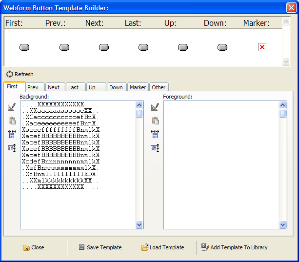
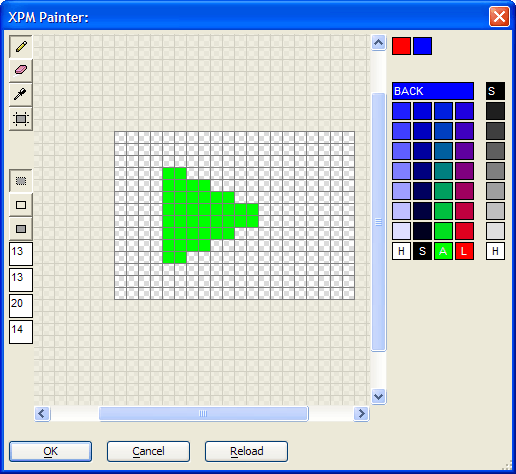
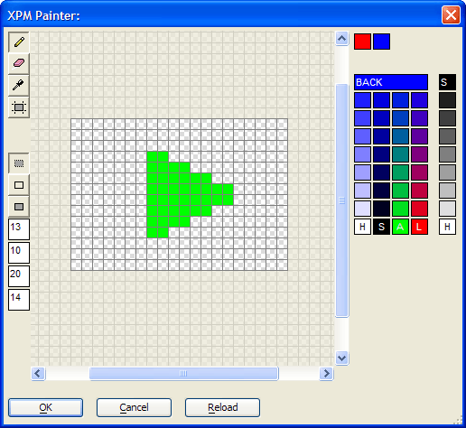
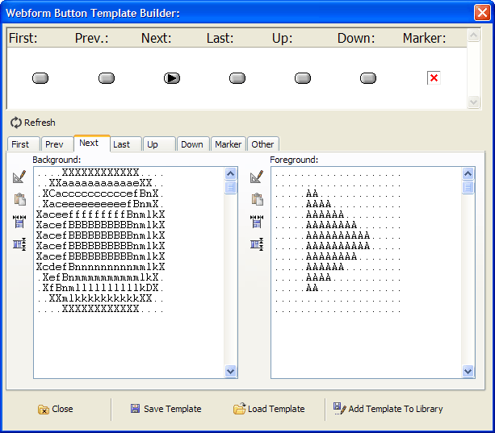
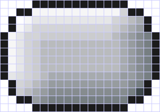
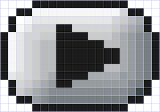

Webform Button Template Builder
The Cascading Style Sheets of the Web Component Builder include buttons. In addition, there are multiple button templates that you can use in the Webform Button Genie. The buttons in the style sheets are specific implementations of the button templates. If none of these buttons or templates satisfies your requirements, you may create your own button templates.
|
Good practice is to make all buttons the same height and width.
In the Webform Button Genie click Make Template to display the Webform Button Template Builder.
Initially, none of the 7 buttons at the top of the screen are defined. Your new template will presumably use all seven buttons, but this is not required.
Select theFirst tab.
Click the
 button to the left of the Foreground
window. This displays the
XPM Painter. Design the foreground of
your graphic and return to the Webform Button Template
Builder.
button to the left of the Foreground
window. This displays the
XPM Painter. Design the foreground of
your graphic and return to the Webform Button Template
Builder.Click the
button to the left of the Background
window. Fill the background of your graphic with the background design
and return to the Webform Button Template Builder.Switch to theLast tab.
Click
 to the left of the Foreground
window and select the First icon.
to the left of the Foreground
window and select the First icon.Click
 to flip the image horizontally.
to flip the image horizontally.Click
to the left of the Background
window and select the First icon.Use variations of these techniques to create your set of buttons.
Click
 Save Template to save a work in
progress.
Save Template to save a work in
progress.To make a completed template available in the Webform Button Genie.
Display theOther tab.
Enter a name for the template in the Name field.
Click
 Add Template to Library.
Add Template to Library.
Repositioning a Foreground Image
This short tutorial shows some of the features of the Webform Button Template Builder and XPM Painter.
While in theWebform Button Template Builder click
 Load Template.
Load Template.Select "capsol.a5_wf_nb_temp" and click Open.
Select theNext tab. You will notice that the button has an image in the Background window, but no image in the Foreground window.
Click the
button to the left of the Foreground
window. The background image size is 20 x 14 pixels. Enter these dimensions
and click OK to display the
XPM Painter.

Select the
 paint icon and the arrow color. Create an arrow pointing
to the right.
paint icon and the arrow color. Create an arrow pointing
to the right.

If your picture was placed too far to the left, you could reposition it by decreasing the left offset from 13 to 10.

Click OK to return to the Webform Button Template Builder. You can now see your new arrow design in the Foreground window.

The following are pictures of the background and composite images.
 
See Also
Limitations
Web publishing applications only.